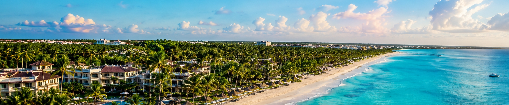
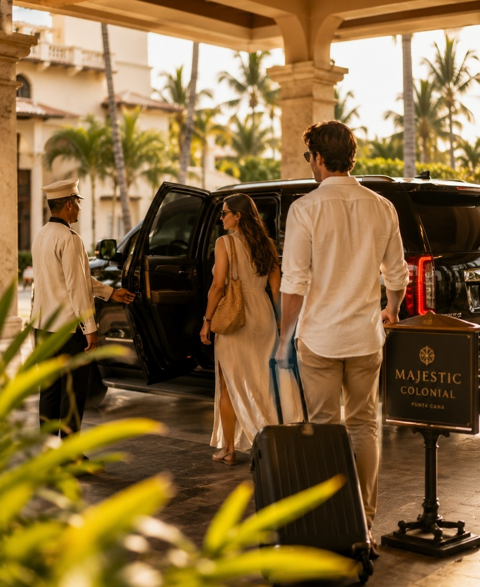
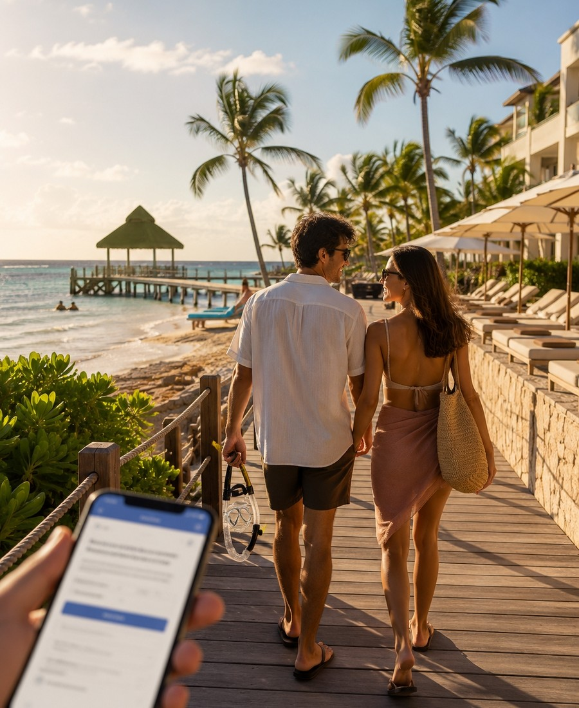
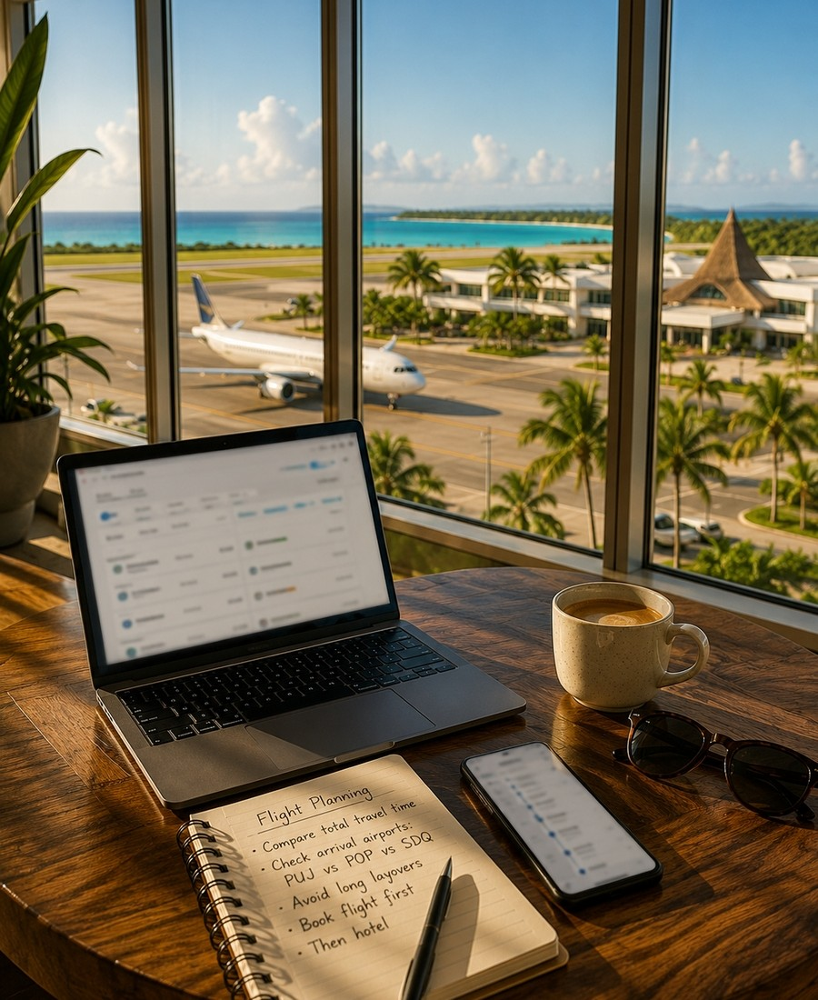

Выбирать курорт до выбора побережья и региона
Пунта-Кана, Байяхибе, Пуэрто-Плата и Самана привязаны к разным аэропортам и разным морям. Сначала выбирается регион, и только потом отель.
→ Сравнить 5 регионов ДР
Планируйте поездку в Доминиканскую Республику уверенно. Сравните Punta Cana, Bayahibe, La Romana, Puerto Plata и другие курорты, а затем воспользуйтесь нашими гайдами по отелям, аэропортам, eSIM, бюджету и выездам, чтобы спланировать каждый шаг.
От редакции: этот хаб ведет на основные материалы Travel Radar LK. Некоторые страницы содержат четко обозначенные партнерские ссылки.
Выберите главный риск поездки, а мы подскажем нужный гайд или следующий шаг для планирования.
Это не чат-бот, а быстрый маршрут: выберите проблему, и мы покажем, что читать и делать дальше.
Выберите сценарий слева, чтобы увидеть, что читать и делать в первую очередь.
Сначала выберите район, затем отель
Punta Cana, Bayahibe и Samaná могут казаться похожими издалека, но они создают совершенно разные поездки, если добавить время на трансфер, стиль пляжа и формат отеля. Решение о районе должно предшествовать поиску отеля.
Следующий шаг: Сначала сравните курортные зоны, затем ищите отели в выбранном районе.
Выбор отеля менее важен, чем выбор правильного побережья и аэропорта. Каждый регион задает свой формат отдыха.
Схематичная карта регионов, не точная география.
Нажмите на регион на карте, чтобы увидеть его главные плюсы и важные нюансы до бронирования.
Последовательность имеет значение. Сначала зафиксируйте район и отель — затем выстраивайте остальные услуги вокруг этого решения.


Punta Cana предлагает бесконечные all-inclusive курорты с прямым доступом к пляжу и простой логистикой. Bayahibe и La Romana создают более спокойную, камерную карибскую атмосферу с меньшим количеством туристов. Puerto Plata и Samaná меняют курортное удобство на живописные пейзажи и более аутентичный местный колорит.
Сначала откройте карту выше, выберите район, затем ищите отели с фильтром по этой зоне. Не принимайте решения отталкиваясь только от фотографии.

Большинство курортов Punta Cana находятся в 15–30 минутах от аэропорта PUJ, что делает прибытие комфортным. Bayahibe и La Romana добавляют 45–70 минут. Puerto Plata (POP) и Samaná требуют отдельного маршрута перелетов или длительной поездки по земле. Долгий трансфер в день прибытия после трансатлантического рейса существенно меняет впечатления от поездки.
Бронируйте трансфер после подтверждения отеля — не раньше. Адрес посадки определяет класс автомобиля и цену.

eSIM, установленная до вылета, означает, что карты, брони отелей и приложения для транспорта будут работать с первой минуты после приземления. Никаких очередей за SIM-картами в аэропорту. Никаких сюрпризов в роуминге.
Сохраните вашу домашнюю SIM-карту активной для банковских кодов и двухфакторной аутентификации. Используйте eSIM только для интернета.

Надежный полис с медицинским покрытием от $50 000 — это спокойная база. Если вы планируете арендовать скутер, заниматься снорклингом, дайвингом или участвовать в активных турах, убедитесь, что покрытие этих активностей включено до вылета — а не после инцидента.
Храните номер полиса и телефон экстренной помощи офлайн — не только в электронной почте.

Остров Saona, национальный парк Los Haitises, 27 водопадов Damajagua и туры для наблюдения за китами быстро распродаются в высокий сезон. Проверьте логистику сбора до бронирования: выезд из отеля в 6 утра на экскурсию в Santo Domingo на весь день меняет ваши планы на день до её начала.
Выбирайте по размеру группы, точке сбора и общей длительности — а не только по фотографии или цене.

Большинство курортных поездок начинается через международный аэропорт Punta Cana (PUJ). Puerto Plata (POP) и Santo Domingo (SDQ) обслуживают свои регионы. Цены на рейсы сильно зависят от даты — сдвиг на два-три дня в гибком календаре может изменить стоимость больше, чем ночь в отеле.
Долгие стыковки в США или Европе могут сделать дешевый билет намного дороже. Проверяйте общее время в пути, а не только тариф.
Каждый блок закрывает конкретный этап выбора перед поездкой.
Эти шесть просчётов при планировании вызывают большинство разочарований в Пунта-Кане, Байяхибе и на северном побережье.
Пунта-Кана, Байяхибе, Пуэрто-Плата и Самана привязаны к разным аэропортам и разным морям. Сначала выбирается регион, и только потом отель.
→ Сравнить 5 регионов ДРВсе три зоны относятся к Пунта-Кане, но сильно различаются по волнам, плотности курортов, цене и длине трансфера. Важно попасть в свою зону.
→ Сравнить зоны Пунта-КаныРекламные снимки скрывают барьеры от саргассума, долгую дорогу до пляжа из дальних корпусов и скрытые доплаты. Пять быстрых проверок защитят бюджет.
→ Открыть чек-лист отеляВысокая оценка говорит лишь о том, что прошлые гости были довольны своим форматом — но отель всё равно может не подойти по шуму, контингенту или пляжу.
→ Как проверять рейтинг 9.2Отсутствие бесплатного QR-кода eTicket, навязанное такси у выхода из терминала или ошибка со временем дороги способны испортить первый же день отпуска.
→ Подготовиться к прилёту в PUJНа рекламных буклетах Пунта-Кана и Канкун похожи, но они отличаются перелётами, экскурсиями за пределами отеля, сезоном водорослей и общей ценой.
→ Сравнить Пунта-Кану и Канкун